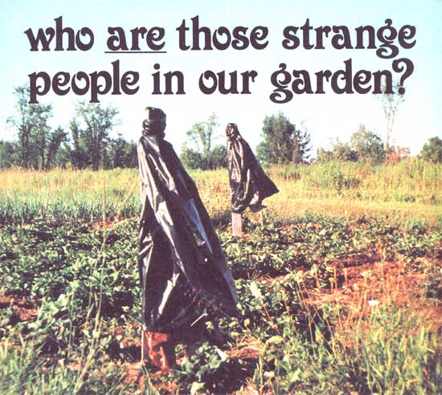

I'm not exactly wild about plastic (few of us are), but-like everyone else- I end up using it anyway. And-like more and more folks these days?I end up reusing what little plastic I come in contact with again and again before throwing it out.
Over the years, I've seen lots of ways to "recycle" plastic ... but it wasn't until I visited my father-in-law's garden last summer that I learned of a way to recycle plastic and keep birds, rabbits, and groundhogs out of the garden at the same time.
It's like this: One windy day, Ed (my father-in-law) took a large plastic trash bag full of grass clippings over to his garden to work into the soil, After dumping the clippings, however, he found himself clutching a big, empty sack that was flapping violently in the wind. Not wanting to be left holding the bag (so to speak), Ed opened the sack, dropped it over a nearby post, and started doing something else. Then-before going home-he tied the bag to the post (so it would stay put).
During the next few days-as he worked in the garden-Ed watched birds fly into and out of his strawberry patch. Not just into . . . but into and out of the patch. The birds didn't stay long when they landed, and they didn't seem to land as often as before.
Ed also noticed that-oddly enough?when the plastic crackled in the wind, rabbits left the area almost as fast as Bugs Bunny zips through a Warner Brothers' cartoon. Even groundhogs kept their dis'eance. (One lived close by all summer, but never bothered the garden.)
So ... if you're fed up with plastic and with garden pests, good news! You can use one to bother the other. All you need are some stakes or posts (which you probably already have in place), a little twine, and a used trash bag or two. Put 'em all together, and you've got a plastic scarecrow: a "scare bag".
If scare bags have one drawback, it's that they work too well. People in Ed's garden, for instance, are always looking to see who or what is behind them. (Ed admits that he's turned and said, "Howdy", to a plastic bag more times than he likes to remember!) I'd say that's a pretty small price to pay, however, for a device that [1] lets you make good use of "useless" plastic and [2] helps put food on the table, too ... wouldn't you?
|
 |
|
|